“How might the language learning experience be supported and facilitated through the use of modern technologies such as virtual reality?”
conVRse
ConVRse is an immersive learning adventure that places users right in the heart of another culture and experiences that provide opportunities for learning the three essential elements of language: vocabulary, listening, and speaking. By utilizing virtual reality (VR) technology, ConVRse creates an atmosphere where users can interact, socialize, and collaborate with other learners and native speakers in order to learn a new language. ConVRse aims to provide a delightful and impactful method for acquiring a second language.
Design question
Research & discovery
We started with researching about different language learning theories and interviewing linguists at University of Washington Language Department to draw observations on foreign language learning. We followed that with interviewing 12 participants to understand problems they face with current language learning tools. The research and competitive analysis of current tools led us to the conclusion that a more immersive environment is needed for language learning which included elements of social interaction. We decided to leverage VR as all the research showed VR as the natural progression to the current technology. To understand more about VR we reached out to industry experts and attended VR meetups. We also researched various VR platforms and finally decided on AltSpaceVR.
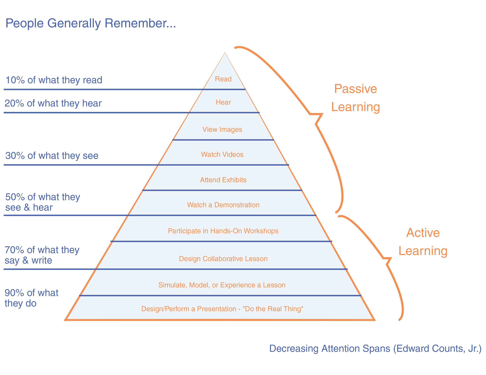
With globalization in full swing, businesses worldwide acknowledge the need to learn not only the language but the culture of another country. In order to efficiently learn languages in a relatively shorter time frame, newer and more effective methods are constantly being sought after. Language learning is also an enormous market as it is evident by the successes of applications such as Duolingo and Rosetta Stone (Review: Babel and Dualingo, 2013). It has been observed through research that in order to be fluent in any given language, one has to be immersed in a surrounding where the target language is the primary medium of communication for a significant amount of time which is not possible for everyone. Simulation-based language learning can overcome time and remote distance issues. Using VR people can manipulate the environment such as language, place, and time variables while being immersed in a situation that feels like a natural environment.
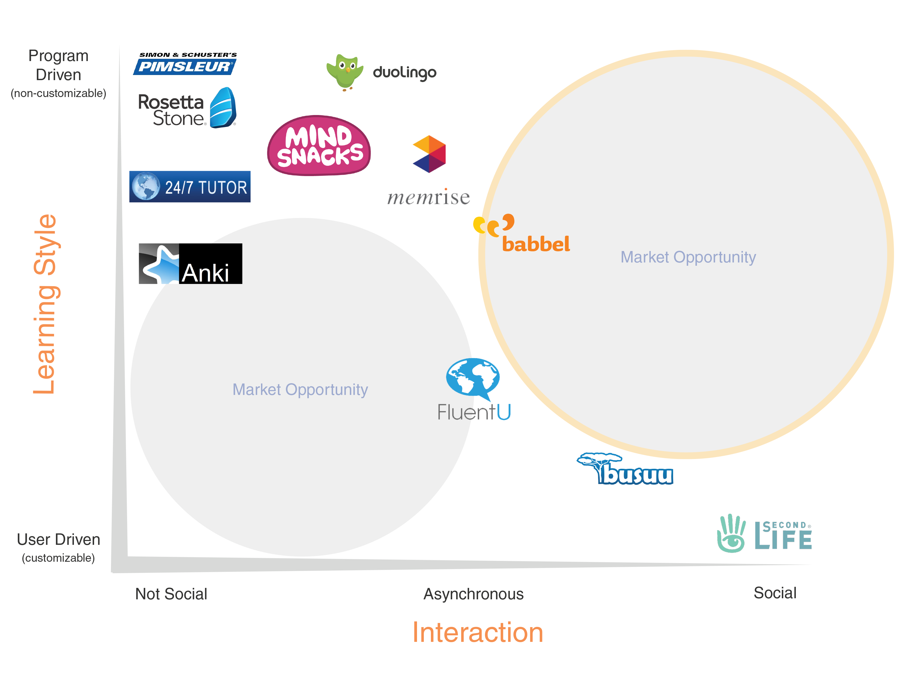
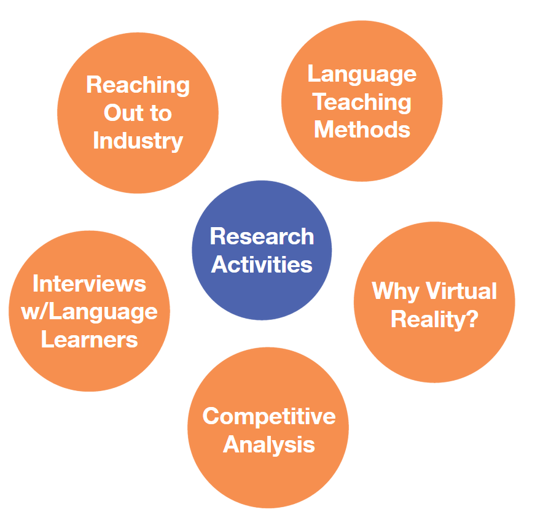
Research indicates that learning a new language is optimum between the ages of 10 and 12 years old. This means that for the vast majority of individuals, learning a new language happens after this most effective period is long gone. Language learning challenges also include finding access to native speakers for practicing speech, overcoming feelings of embarrassment or low confidence in one’s own ability to speak well, understanding other languages conceptually, and avoiding burnout
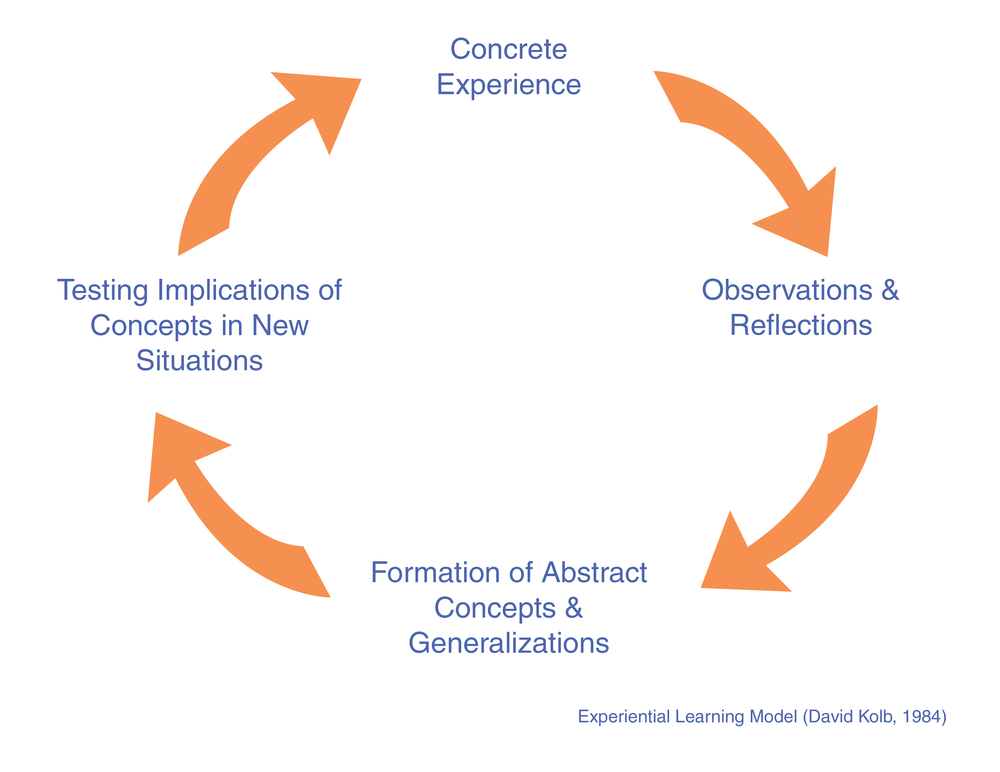
The matrix reveals two sets of market opportunities: one in the more Non-Social and User-Driven quadrant, and one in the more Social and Program-Driven quadrant. Based on the research described above, the social aspect of Second Language Acquisition is a key component of learning the hardest part of language learning: speech. The social aspect is also something that VR can help solve better than most existing technologies, and is a great feature to capitalize on. Due to these reasons, and because of the clear gap, we are likely to focus on the Social end of the spectrum. The matrix also shows that we have some room on the spectrum of Learning Style. Our research shows that it is important to teach students the way they learn best.
Design process
Through our interviews we discovered that it can be a real challenge to have social interactions with others in the target language when the learner is a complete beginner and knows very little. This type of social interaction requires a heavy moderation by an instructor, or guide who structures the conversation. Due to this, we feel that VR social interaction is better suited for individuals who have some basic knowledge of the language, and who can form basic sentences. For this reason we decided that our target audience will primarily be people who have some basic knowledge of the language and want to learn the language for business/travel purposes.
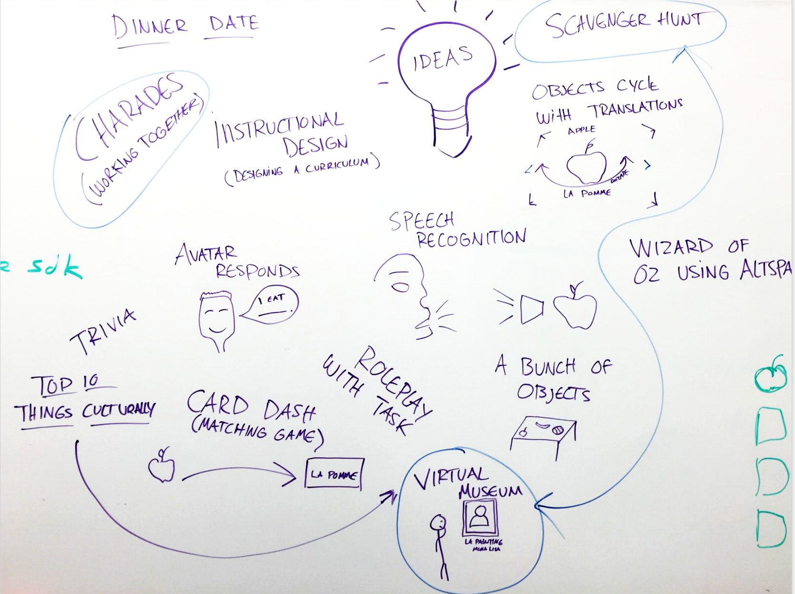
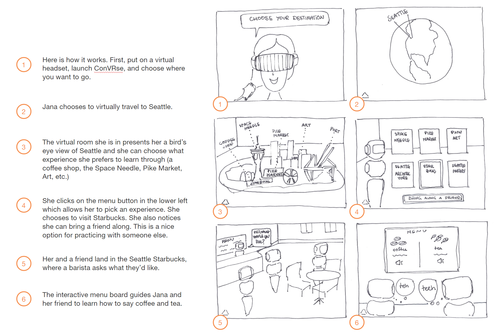
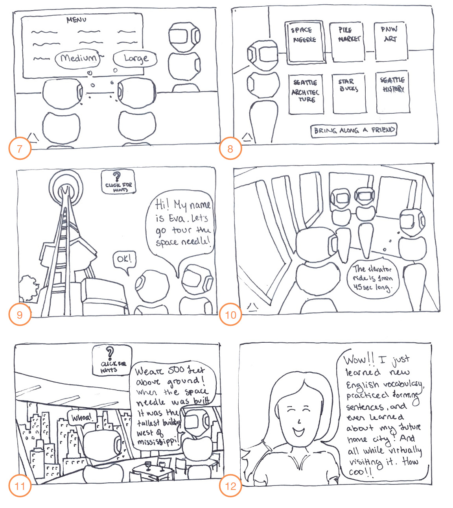
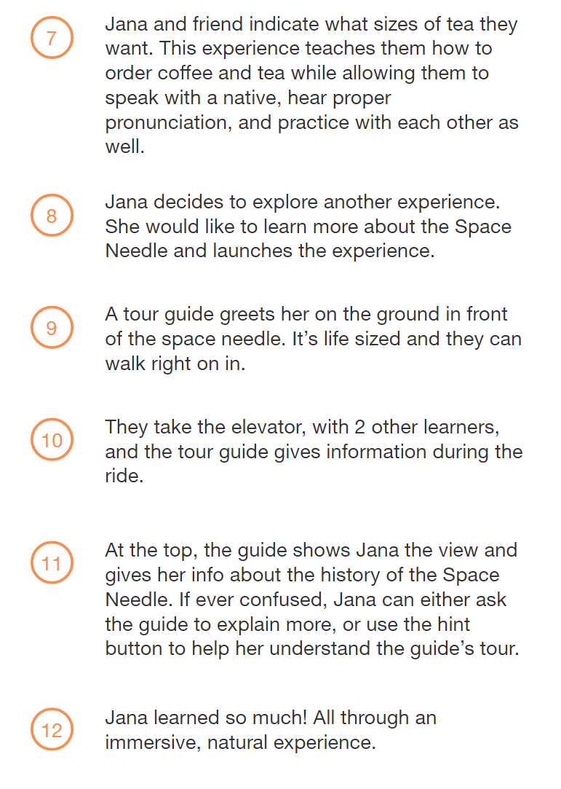
Final designs
The main approach we wanted to make with our modeled environment is to show the design intent and how we imagine our interactive space would look like. Using SketchUp, we modeled out an entire cafe environment which could be one of the choices that our users will have to interact with.
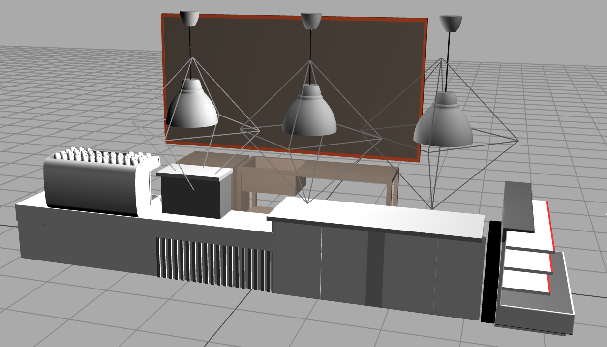
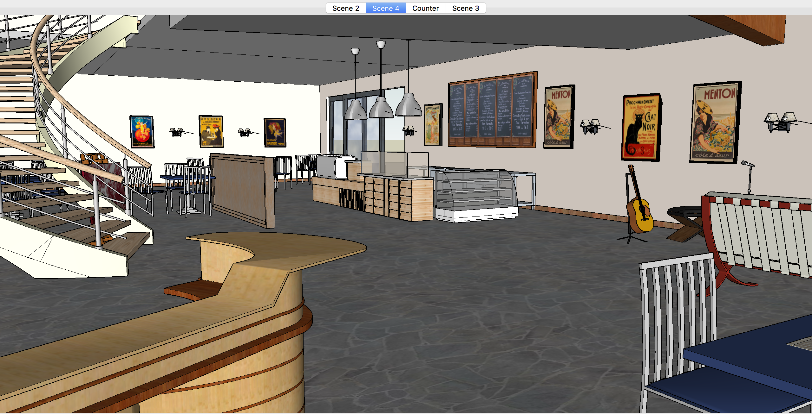
In this space, users may be exposed to how to order coffee in a new language, different types of foods, conversational structure, and even cultural etiquette. We designed this space to mimic a typical coffee shop found in Paris with open spaces, a fountain area, and various lounge areas for social interactions. This allows the user to experience this culture within context as if they’ve traveled to Paris, and learn to speak French the way that it was intended to be used. This is just our first draft of the model and we iterated on the design further by adding lighting and higher fidelity textures.
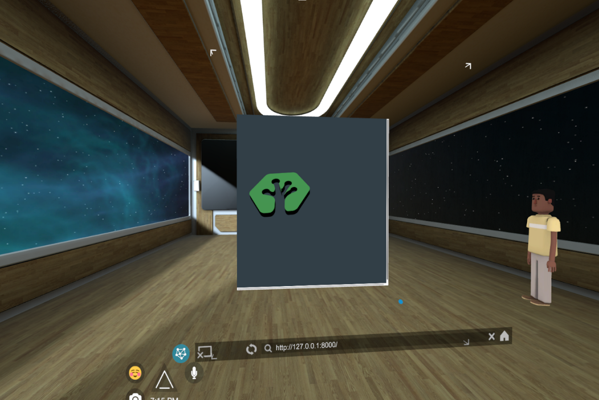
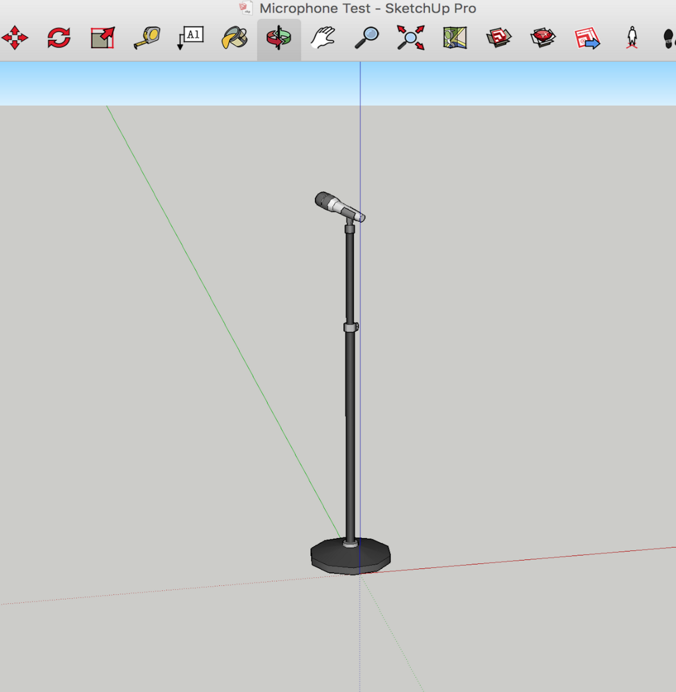
We then needed to take an object from SketchUp Pro into Altspace. In order to do this we would need to go through a number of steps to allow us to preview the object since Altspace has a very specific way of viewing content with many unique constraints having to only use three.js in conjunction with Oculus’ SDK.
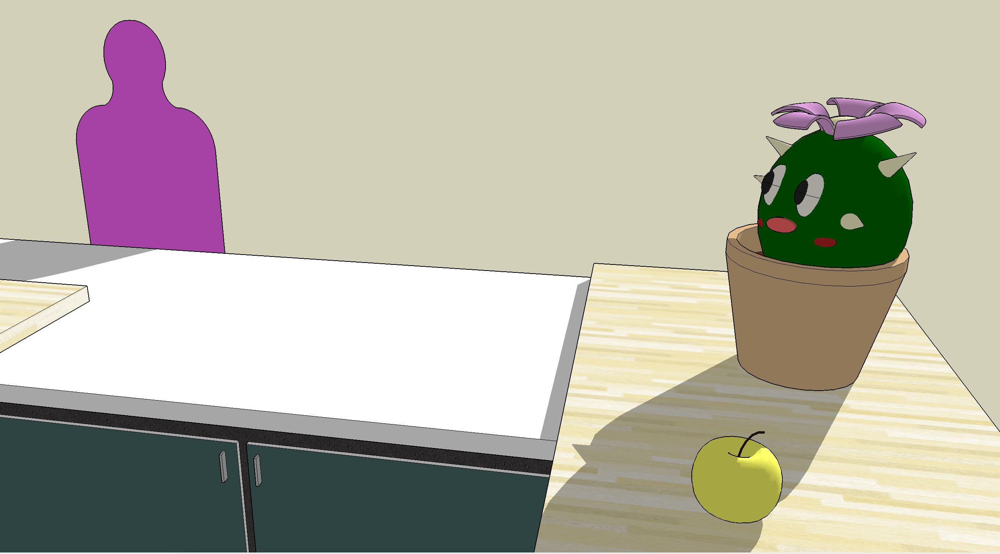
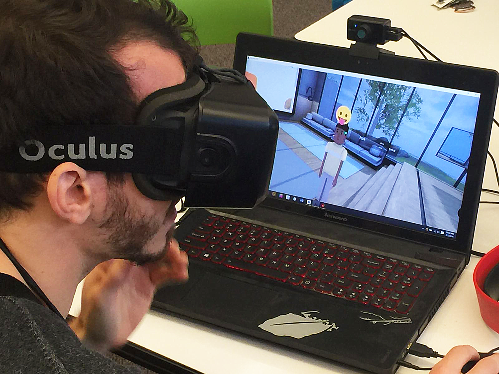
Results & impact
One main thing we continued to gain confirmation for, was the value in teaching a foreign language using VR technology. Not only did Intel express interest in it, but the Altspace team was willing to support us and meet with our team to get our model working and continued to show interest in launching a language learning application in their environment. Additionally, all our interviewees expressed enthusiasm for the concept and our user evaluation further proved that this is a worthwhile venture to pursue.
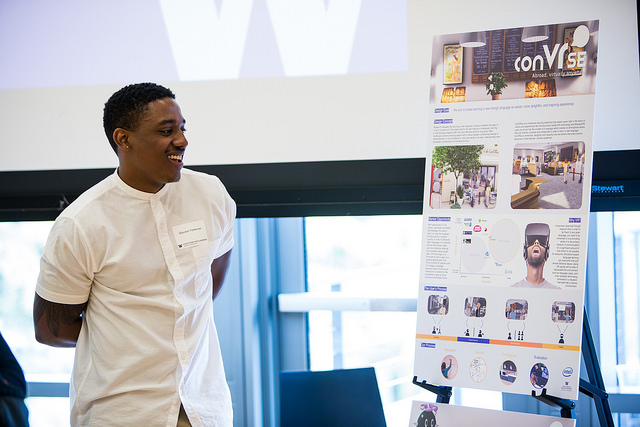
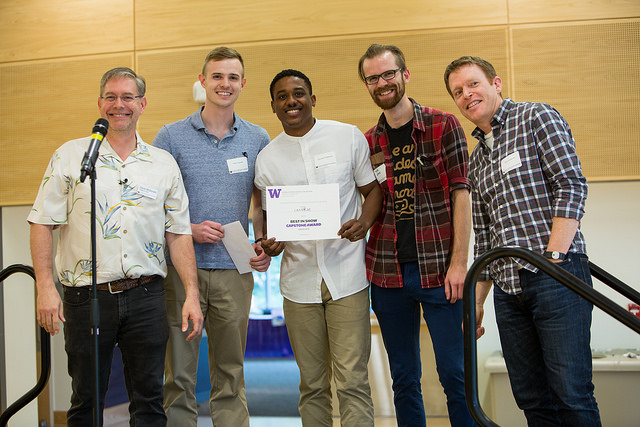
“When I’m in this thing, I feel so engaged by it.” — Participant
As the closing capstone project to our careers at the Human Centered Design & Engineering department, we participated in the annual Capstone Presentation and won “Best In Show” for graduate attendees. It was a rewarding experience to let people try out our language learning experience and see for themselves how VR can further retain their progress when learning a new language!